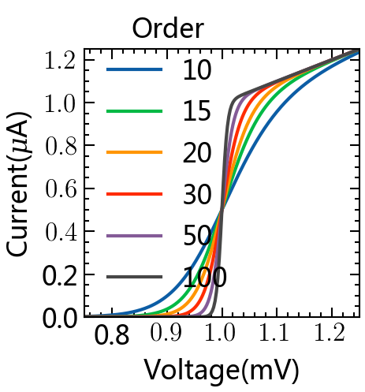
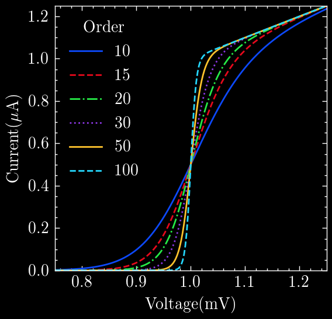
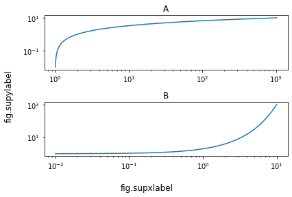

Matplotlib的科学绘图样式¶
Matplotlib styles for scientific plotting
https://github.com/garrettj403/SciencePlots
!pip3 install SciencePlots
Collecting SciencePlots
Downloading SciencePlots-1.0.9.tar.gz (10 kB)
Installing build dependencies ... ?25ldone
WARNING: Missing build requirements in pyproject.toml for SciencePlots from https://files.pythonhosted.org/packages/c2/44/7b5c0ecd6f2862671a076425546f86ac540bc48c1a618a82d6faa3b26f58/SciencePlots-1.0.9.tar.gz#sha256=2b002f263734a718acdf1e5be57f0de5ee887e70517dfbe1118a27d0ee3dfb0f.
WARNING: The project does not specify a build backend, and pip cannot fall back to setuptools without 'wheel'.
?25h Getting requirements to build wheel ... ?25ldone
?25h Installing backend dependencies ... ?25ldone
?25h Preparing wheel metadata ... ?25ldone
?25hCollecting matplotlib
Using cached matplotlib-3.4.3-cp37-cp37m-macosx_10_9_x86_64.whl (7.2 MB)
Collecting pillow>=6.2.0
Using cached Pillow-8.3.2-cp37-cp37m-macosx_10_10_x86_64.whl (3.0 MB)
Collecting python-dateutil>=2.7
Using cached python_dateutil-2.8.2-py2.py3-none-any.whl (247 kB)
Collecting cycler>=0.10
Using cached cycler-0.10.0-py2.py3-none-any.whl (6.5 kB)
Collecting pyparsing>=2.2.1
Using cached pyparsing-2.4.7-py2.py3-none-any.whl (67 kB)
Collecting kiwisolver>=1.0.1
Using cached kiwisolver-1.3.2-cp37-cp37m-macosx_10_9_x86_64.whl (61 kB)
Collecting numpy>=1.16
Using cached numpy-1.21.2-cp37-cp37m-macosx_10_9_x86_64.whl (16.9 MB)
Collecting six>=1.5
Using cached six-1.16.0-py2.py3-none-any.whl (11 kB)
Building wheels for collected packages: SciencePlots
Building wheel for SciencePlots (PEP 517) ... ?25ldone
?25h Created wheel for SciencePlots: filename=SciencePlots-1.0.9-py3-none-any.whl size=6483 sha256=488be09dfb62ffef77dcdc16a4e8274eb6e1341c7e5a64fa6dccb2931a00b19f
Stored in directory: /Users/datalab/Library/Caches/pip/wheels/37/f8/e9/b2f53a40b336388dfc57b108150daff7d6ffbbfc618dba3924
Successfully built SciencePlots
Installing collected packages: pillow, six, python-dateutil, cycler, pyparsing, kiwisolver, numpy, matplotlib, SciencePlots
Successfully installed SciencePlots-1.0.9 cycler-0.10.0 kiwisolver-1.3.2 matplotlib-3.4.3 numpy-1.21.2 pillow-8.3.2 pyparsing-2.4.7 python-dateutil-2.8.2 six-1.16.0
SciencePlots库需要电脑安装LaTex，其中
MacOS电脑安装MacTex https://www.tug.org/mactex/
Windows电脑安装MikTex https://miktex.org/
import matplotlib.pyplot as plt
import numpy as np
plt.style.use('science')
def function(x,p):
return x**(2*p+1)/(1+x**(2*p))
pparam=dict(xlabel='Voltage(mV)',ylabel='Current($\mu$A)')
x=np.linspace(0.75,1.25,201)
with plt.style.context(['science']):
fig,ax=plt.subplots(figsize=(3, 3), dpi=150)
for p in[10,15,20,30,50,100]:
ax.plot(x,function(x,p),label=p)
ax.legend(title='Order')
ax.autoscale(tight=True)
ax.set(**pparam)
#fig.savefig('figures/fig1.pdf')
#fig.savefig('figures/fig1.jpg',dpi=300)

with plt.style.context(['science','ieee']):
fig,ax=plt.subplots(figsize=(3, 3), dpi=150)
for p in[10,15,20,30,50,100]:
ax.plot(x,function(x,p),label=p)
ax.legend(title='Order')
ax.autoscale(tight=True)
ax.set(**pparam)

with plt.style.context(['science','nature']):
fig,ax=plt.subplots(figsize=(3, 3), dpi=150)
for p in[10,15,20,30,50,100]:
ax.plot(x,function(x,p),label=p)
ax.legend(title='Order')
ax.autoscale(tight=True)
ax.set(**pparam)

with plt.style.context(['science','notebook']):
fig,ax=plt.subplots(figsize=(3, 3), dpi=150)
for p in[10,15,20,30,50,100]:
ax.plot(x,function(x,p),label=p)
ax.legend(title='Order')
ax.autoscale(tight=True)
ax.set(**pparam)

with plt.style.context(['science','bright']):
fig,ax=plt.subplots(figsize=(3, 3), dpi=150)
for p in[10,15,20,30,50,100]:
ax.plot(x,function(x,p),label=p)
ax.legend(title='Order')
ax.autoscale(tight=True)
ax.set(**pparam)

with plt.style.context(['science','high-vis']):
fig,ax=plt.subplots(figsize=(3, 3), dpi=150)
for p in[10,15,20,30,50,100]:
ax.plot(x,function(x,p),label=p)
ax.legend(title='Order')
ax.autoscale(tight=True)
ax.set(**pparam)

with plt.style.context(['dark_background','science','high-vis']):
fig,ax=plt.subplots(figsize = (3, 3), dpi = 200)
for p in[10,15,20,30,50,100]:
ax.plot(x,function(x,p),label=p)
ax.legend(title='Order')
ax.autoscale(tight=True)
ax.set(**pparam)

with plt.style.context(['science','scatter']):
fig,ax=plt.subplots(figsize=(4,4), dpi=150)
ax.plot([-2,2],[-2,2],'k--')
ax.fill_between([-2,2],[-2.2,1.8],[-1.8,2.2],
color='dodgerblue',alpha=0.2,lw=0)
for i in range(7):
x1=np.random.normal(0,0.5,10)
y1=x1+np.random.normal(0,0.2,10)
ax.plot(x1,y1,label=r"$^\#${}".format(i+1))
ax.legend(title='Sample',loc=2)
xlbl=r"$\log_{10}\left(\frac{L_\mathrm{IR}}{\mathrm{L}_\odot}\right)$"
ylbl=r"$\log_{10}\left(\frac{L_\mathrm{6.2}}{\mathrm{L}_\odot}\right)$"
ax.set_xlabel(xlbl)
ax.set_ylabel(ylbl)
ax.set_xlim([-2,2])
ax.set_ylim([-2,2])

Common xlabel/ylabel for matplotlib subplots¶
https://stackoverflow.com/questions/6963035/pyplot-axes-labels-for-subplots
New in matplotlib 3.4.0
We can now use supxlabel and supylabel to set a common xlabel and ylabel.
Note that these are FigureBase methods, so they can be used with either Figure and SubFigure.
pip install --upgrade matplotlib
Collecting matplotlib
Using cached matplotlib-3.4.3-cp37-cp37m-macosx_10_9_x86_64.whl (7.2 MB)
Requirement already satisfied, skipping upgrade: pyparsing>=2.2.1 in /opt/anaconda3/lib/python3.7/site-packages (from matplotlib) (2.4.2)
Requirement already satisfied, skipping upgrade: numpy>=1.16 in /opt/anaconda3/lib/python3.7/site-packages (from matplotlib) (1.20.3)
Requirement already satisfied, skipping upgrade: python-dateutil>=2.7 in /opt/anaconda3/lib/python3.7/site-packages (from matplotlib) (2.8.1)
Requirement already satisfied, skipping upgrade: kiwisolver>=1.0.1 in /opt/anaconda3/lib/python3.7/site-packages (from matplotlib) (1.1.0)
Requirement already satisfied, skipping upgrade: pillow>=6.2.0 in /opt/anaconda3/lib/python3.7/site-packages (from matplotlib) (8.0.0)
Requirement already satisfied, skipping upgrade: cycler>=0.10 in /opt/anaconda3/lib/python3.7/site-packages (from matplotlib) (0.10.0)
Requirement already satisfied, skipping upgrade: six>=1.5 in /opt/anaconda3/lib/python3.7/site-packages (from python-dateutil>=2.7->matplotlib) (1.12.0)
Requirement already satisfied, skipping upgrade: setuptools in /opt/anaconda3/lib/python3.7/site-packages (from kiwisolver>=1.0.1->matplotlib) (58.1.0)
ERROR: pytorch-forecasting 0.9.0 has requirement scikit-learn<0.25,>=0.23, but you'll have scikit-learn 1.0 which is incompatible.
ERROR: datapane 0.8.1 has requirement ruamel.yaml<0.17.0,>=0.16.5, but you'll have ruamel-yaml 0.15.87 which is incompatible.
Installing collected packages: matplotlib
Attempting uninstall: matplotlib
Found existing installation: matplotlib 3.1.3
Uninstalling matplotlib-3.1.3:
Successfully uninstalled matplotlib-3.1.3
Successfully installed matplotlib-3.4.3
Note: you may need to restart the kernel to use updated packages.
import pylab as plt
import numpy as np
x = np.arange(0.01, 10.01, 0.01)
y = 2 ** x
fig, (ax1, ax2) = plt.subplots(2, 1)
ax1.loglog(y, x)
ax2.loglog(x, y)
# subplot titles
ax1.set_title('A')
ax2.set_title('B')
# common labels
fig.supxlabel('fig.supxlabel')
fig.supylabel('fig.supylabel')
plt.tight_layout()

import pylab as plt
import numpy as np
x = np.arange(0.01, 10.01, 0.01)
y = 2 ** x
fig = plt.figure()
plt.subplot(2, 1, 1)
plt.loglog(y, x)
plt.title('A')
plt.subplot(2, 1, 2)
plt.loglog(x, y)
plt.title('B')
# common labels
fig.supxlabel('fig.supxlabel')
fig.supylabel('fig.supylabel')
plt.tight_layout()

with plt.style.context(['science','nature']):
fig = plt.figure(figsize=(4,4), dpi=150)
plt.subplot(2, 1, 1)
plt.loglog(y, x)
plt.title('A')
plt.subplot(2, 1, 2)
plt.loglog(x, y)
plt.title('B')
# common labels
fig.supxlabel('fig.supxlabel')
fig.supylabel('fig.supylabel')
plt.tight_layout()